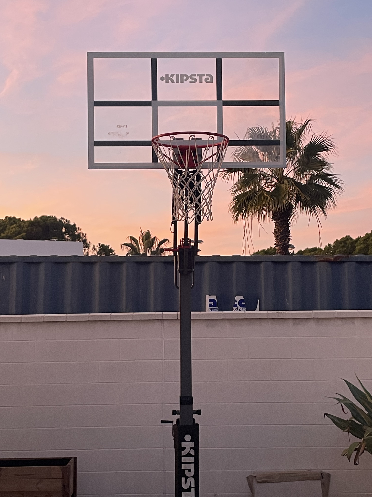

| ¿CÓMO JUGAR AL BALONCESTO? |
 |
| El
baloncesto es un deporte en el que dos equipos intentan marcar más
puntos que el contrario lanzando una pelota a través de un aro. Cada
equipo tiene cinco jugadores en la cancha, y el objetivo es anotar
encestando la pelota en el aro del equipo contrario. Los jugadores
deben driblar la pelota (hacerla rebotar mientras corren) y pasarla a
sus compañeros para encontrar una oportunidad de tiro. La defensa trata
de bloquear los tiros y robar la pelota. El equipo que más puntos
consiga al final del tiempo establecido gana el partido. El baloncesto
requiere habilidad, trabajo en equipo, y una buena estrategia. |
FIN GRACIAS POR VISITAR MI PÁGINA WEB |